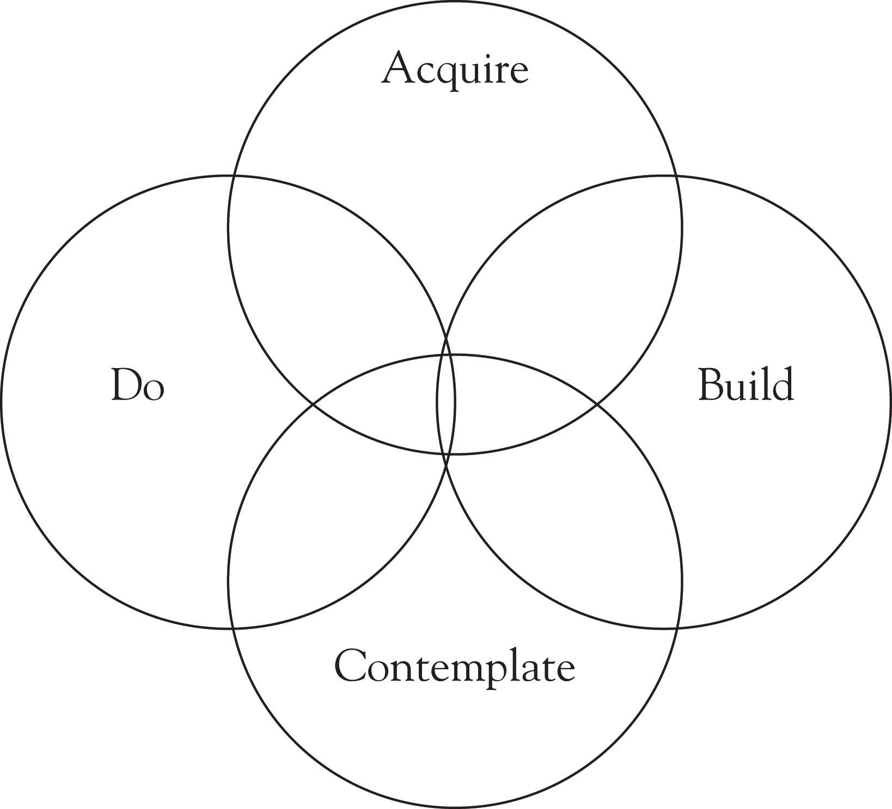

Cultural intelligence is a framework to help you learn to turn off your “cruise control.” Like a computer that has been on too long, is working too hard, or has too many programs running that cause it to freeze, we have to learn to reset our mental programming. Sometimes, resetting it once or twice does not work; you will need to turn it off completely by taking a pause and then returning to it at a later time.
Cultural intelligence emphasizes three areas: metacognition and cognition, motivation, and behavior. Metacognition and cognition represent your ability to think, learn, and strategize. In CI, the principle of motivation refers to your self-efficacy and confidence, your ability to be persistent, and the alignment to your personal values. Behavior, in CI, is about your ability to have a repertoire of skills and your ability to adapt your behavior.
The framework for cultural intelligenceA research-based model of intelligence that can be used to help leaders work through intercultural dilemmas and create understanding and awareness across and between cultures. It consists of four parts: knowledge, strategic thinking, motivation, and behaviors. consists of the following parts: knowledge, strategic thinking, motivation, and behaviors. It may be helpful to think about these as the ABCs of CIAcquire, Build, Contemplate, and Do.: Acquire, Build, Contemplate, and Do.
Figure 3.1 Cultural Intelligence Model
A fundamental piece of inter- and cross-cultural interactions is the knowledge a leader has when working with cultures unfamiliar and different from his or her own. Knowledge is a central tenet in intercultural training and is included in the cultural intelligence model because it is essential for any person, whether leading or managing, to be attentive to cultural systems. You must know how cultures are created, interpreted, and shared, as well as how cultural interpretations, meaning, and symbols can impact behaviors and attitudes.
You can think about this aspect of the model as acquire, because you need to acquire information and knowledge that help you to identify cultural elements at play. The acquisition of knowledge—tapping into what you have stored in your memory—is cognition.
Once you gain knowledge about the culture, how will you use it? What parts of the knowledge obtained will you use? Will they all fit, given the cultural setting? These questions address the component of cultural intelligence that speaks to your ability, as a leader, to strategize across cultures. It is your ability to build awareness of your surrounding through preparation and planning. It is often referred to as “metacognition.”
Earley et al. noted, “Figuring out how things operate and what is appropriate in a new culture is detective work using the facts of the case—assemble them, order and organize them, interpret them, act on them.”Earley et al. (2006), p. 27. Strategic thinking is important because it is how you think about, or make sense of, the knowledge and use it in a way that helps you better perform and interact with different cultures. If you are able to understand how you learn the information and how you have processed it, this helps you to make sense of unfamiliar situations. Early and PetersonEarley & Peterson (2004), p. 105. wrote that when there is a focus on metacognition, this component of CI can help people to develop and expand their behavioral repertoires.
The third element of the cultural intelligence model speaks to your ability to pay attention to your surroundings as well as your responses to unfamiliar situations. It is about reflecting upon your own interests, your drive, and your motivation, as well as your willingness to work through, and with, cultural interactions.
You can think about this component of the model as contemplate because it requires you to be present—to take a step back, suspend your judgments and biases, reflect upon your assumptions, and listen carefully. It requires that you be alert and remain aware of your cultural surroundings. As a leader, presence allows you to identify the cultural scripts that are hidden and to recognize when to turn them off.
Richard Carlson said that “everything we do has the potential to influence another human being…the key element here is not to second-guess yourself but rather to become conscious of how your life choices influence those around you.”Carlson (2005), p. 130. Carlson speaks to our level of conscious choice in day-to-day living. When do we choose to adapt to our environments? Because of a choice we made, what did we let go? How has our choice affected our beliefs and values?
These questions address the fourth component of cultural intelligence, which is your adaptability and ability to perform new behaviors based on new cultural surroundings. Are you aware of how others see you and how you come across to them? How do you interpret what others say, and how do you respond? Culturally intelligent leaders are like chameleons in social environments, changing their behaviors to mimic their surroundings.